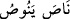

Yâni ‘bilâkis onlar, kendilerini, hakkı ve îmânı kabul edemeyecek kadar büyük ve
müthiş bir gurura sâhip görmektedirler’ şeklinde yorumlamışlardır. Diğer bir ifâdeyle
onlar Hakk’ı kabul etme konusunda serkeşlik içindedirler.
(
) yâni “ayrılık ve ihtilaf” içindedirler; yâni Allah’a karşı gelme ve Allah
Rasûlü’ne büyük bir düşmanlık içindedirler. Böyle oldukları için de boyun
eğmemektedirler.
et-Te’vîlâtü’n-Necmiyye’de der ki: “Öğüt veren Kur’an’a yemin ederim ki,” ifâdesi,
zikre mahsus olan Kur’an’a kasem etmeğe işâret eder. Çünkü Kur’an, hasta gönüllerin
tedavisini sağlayan ilâhi bir kanundur. En büyük gönül hastalığı ise ‘onlar Allah’ı
unuttular, O da onları...’ (et-Tevbe 9/67) âyetinde belirtildiği üzere Allah’ı
unutmaktır. Bu unutmayı tedavi eden en etkili ilaç ise zikirdir. Nitekim bu, ‘beni
zikredin ki ben de sizi zikredeyim’ (el-Bakara 2/152) âyetinde ifâde edilmiştir. Şu da
var ki, bir şey zıddı ile tedavi edilir. Allah Teâlâ, “inkâr edenler, (iddia ettiklerinin)
aksine, bir gurur ve tefrika içindedirler” ifâdesiyle şuna işâret eder: Allah’ı
unutmaları sebebiyle onların kalbî mizaçları yumuşaklık ve selâmetten sertlik ve
katılığa; tevâzudan tekebbüre; uyuşmadan uyuşmazlığa; vuslattan firkate ve sevgiden
düşmanlığa yönelerek hastalıklı hâle gelmiş ve âyetler üzerinde durup düşünmekten,
delille araştırmak ve şâhidlerle iş yapmaktan yüzçevirmeğe meyletmiştir.
3. Onlardan önce nice nesilleri helâk ettik. O zaman feryat ettiler. Hâlbuki artık
kurtulma zamanı değildi.
“Onlardan önce nice nesilleri” yâni gelip geçmiş birçok milleti, kendilerini büyük
görmeleri ve elçilere muhâlefet ettikleri için “helâk ettik” de “o zaman” yâni azâbımız
inip cezâmız geldiğinde bundan kurtulmak için yardım dileyerek veya tevbe ederek ya
da bağışlanma isteyerek “feryat ettiler.” Yâni bir kişi onların yardımına yetişsin diye
seslenip bağırdılar.
(
), aynı zaman diliminde birlikte yaşayan kavimlere denir.
Kurtulmak ümidiyle feryad edip yardım istediler, ama “hâlbuki artık” zaman
“kurtulma” yâni gözden ırak durarak kaçıp kurtulma “zamanı değildi;” ümitsizlik
zamanıydı. Diğer bir ifâdeyle o vakit, kaçış yerine dönme zamanı değildir.
Kaçıp kurtulma anlamına gelen (
) kelimesi, bir şeyi kaçırdığı zaman kullanılan (
) fiilinden (
) vezninde olduğu kabul edilirse, (
) “kurtuluş)” yâni
düşmandan kaçıp kurtulma anlamına gelir ki bu durumda (
) kelimesinden “masdar”
anlamı kasdedilmiş olur. Ayrıca (
) fiilinin, birisinin kaçtığını ya da geciktiğini
ifâde etmede de kullanılır ki gecikme anlamı için şöyle denilir: (
) yâni
akranından bir müddet geç kaldı.